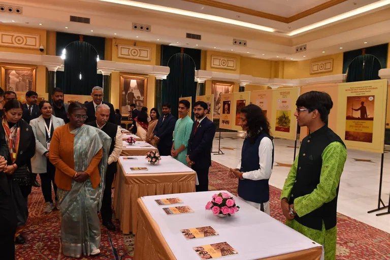
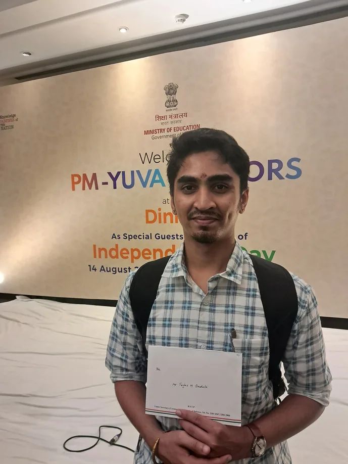

Teju-Goju
A collection of Kannada essays that draws humour from my own habits and the incidents of everyday life.
Portfolio
My work in Kannada includes historical fiction, poetry, weekly columns and commentary on poetry in performance. I also translate Kannada non-fiction into English.

National Book Trust, India, published my novel about resistance to colonial rule in the Western Ghats as part of the first PM-YUVA programme.
About the bookA collection of Kannada essays that draws humour from my own habits and the incidents of everyday life.
I wrote and published this first collection of Kannada poems at thirteen.
English translations of Deekshith Nair’s Kannada works Ettarettara Bhyrappa and Topper’s Secrets.
Kannada columns on public affairs, travel, music, food and local culture.

I joined fellow PM-YUVA authors at Rashtrapati Bhavan for a meeting with the President of India.

I attended the 2025 Independence Day celebrations at the Red Fort as a special invitee.

I hosted the Mysuru programme marking the birth centenary of Padma Shri Dr R Sathyanarayana. My work in Gamaka includes interpreting poetry at performances and teaching in schools and colleges.